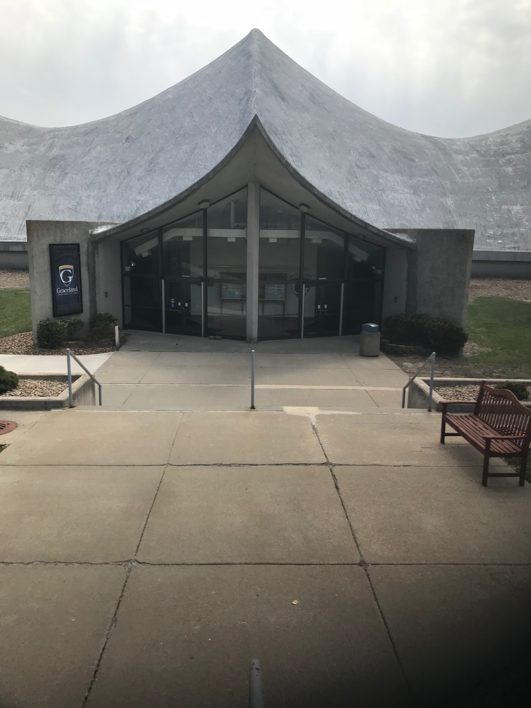
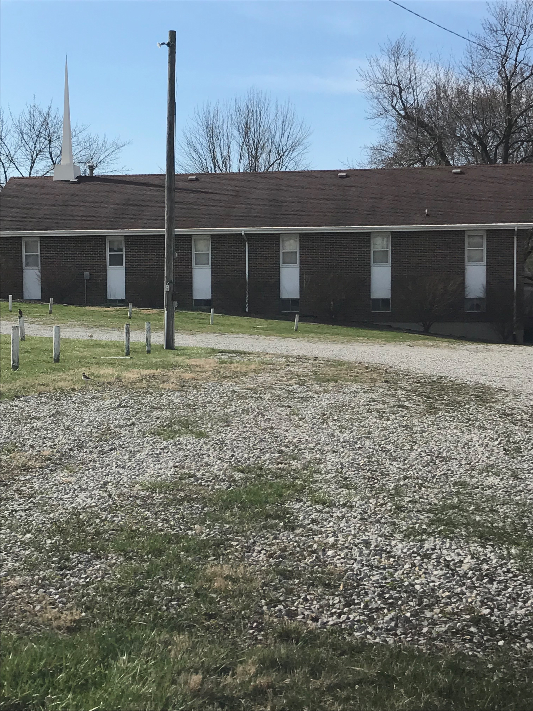
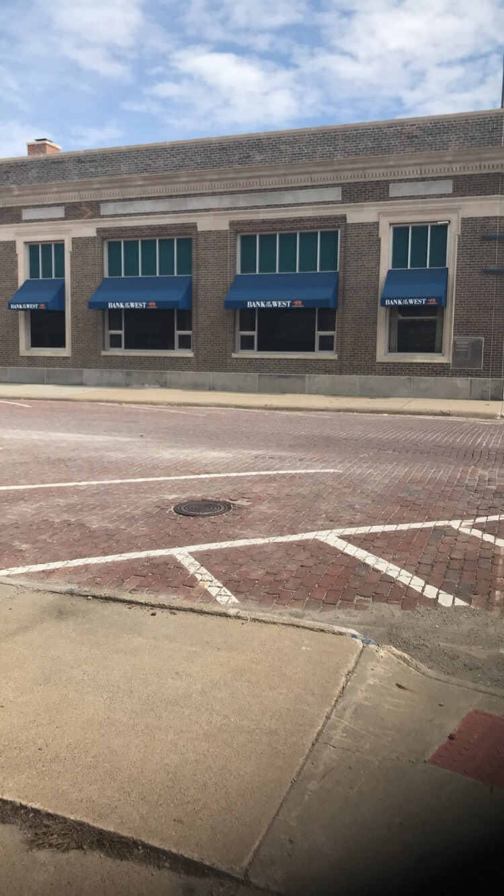

GOOD OLE LAMONI



MORE ABOUT THE CITY
Linden Street Coffee House
A local coffee house located on Main st. Variety of coffee, sandwiches, and wraps.
The Coliseum
The Coliseum Theatre, located at the northeast intersection of Main and Maple streets in Lamoni, was built in 1911. It was first used by Graceland for student recitals. On October 30, 1925, Graceland signed the contract to purchase the building.
GU
Graceland creates learning communities where students develop their potential for meaningful and productive lives. Over 40 academic programs, including nine pre-professional programs, 29 undergraduate majors, three master's degrees and a Doctor of Nursing Practice degree.
Livestock Auction
Lamoni Livestock Auction Inc. is located just off I-35 at Lamoni, Iowa, near the IA-MO state line in the heart of cattle country.This auction has been in business for over 60 years and is currently owned by Randy and Sandy Gibson.
Lamoni Community Center
The Lamoni Community Center welcomes families, groups, and individuals who need a friendly location to meet. The building includes two separate rooms, along with a kitchen connected to the dining room.
MY EXPERIENCE
The experience I have been having here has been quite well other then the fact that I am in the middle of no where. I had to learn how to adjust to the farm life but at the same time I accoutered new experience I will never forget. Being out here also gave me the opportunity to focus on school other then partying. If I was at a Division 1, I feel like I would get lost in the mix and caught up in something. One of the things that bother me while I am out here, is the distance from my family. Being away for my family can be lonely at times but I try to find ways to maneuver around that.